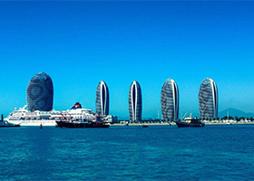
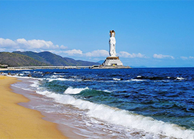
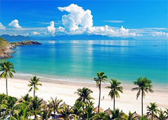
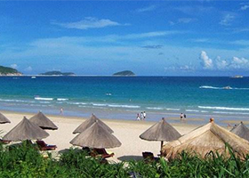
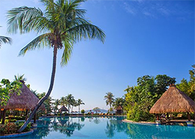
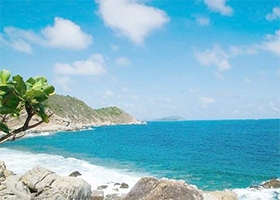

三亚，简称崖，古称崖州，别称鹿城。是海南省下辖地级市，位于海南岛的最南端。三亚东邻陵水县，西接乐东县，北毗保亭县，南临南海，介于北纬18°09′34″~18°37′27″、东经108°56′30″~109°48′28″之间。三亚市陆地总面积1919.58平方千米，海域总面积6000平方千米。东西长91.6千米，南北宽51公里，下辖四个区。2018年，全市年末户籍人口614647人，聚居了汉族、黎族、苗族等20多个民族。
三亚被称为“东方夏威夷”，它拥有全海南岛最美丽的海滨风光。这里有闻名中外的“天下第一湾”亚龙湾和大东海、三亚湾等优质海滨。三亚历史悠久，源远流长，文化多姿多彩。天涯海角、大小洞天、崖州古城、落笔洞三亚古人类遗址等都蕴涵着丰厚的历史文化。来这个顶级度假胜地，除了无尽的美景，更要吃海鲜，泡温泉，在沙滩烧烤... 晒太阳，与椰林树影为伴，在碧海蓝天下尽情放松，来这儿寻找梦想中的度假天堂

